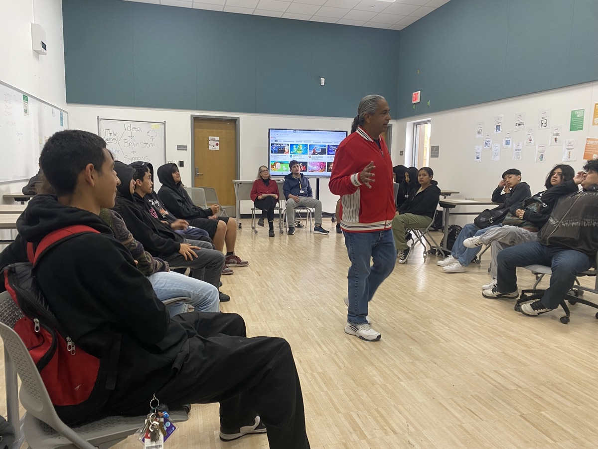

Research & Evidence
Izcalli's healing-circle approach is the subject of independent academic research — evidence that cultural, community-led practice changes lives.
Scholar Juvenal Caporale (Department of Ethnic Studies, California State University, Stanislaus) has studied Izcalli's Círculo de Hombres — first in his doctoral dissertation, and most recently in a peer-reviewed, open-access article.
"Preventing Gang Violence Through Healing Circles: The Case of the Círculo de Hombres in San Diego"
Juvenal Caporale. Social Sciences, 2025, 14(11), 655. Open access.
DOI: 10.3390/socsci14110655
The work examines how Chicano and Mexican men navigate street gangs, the criminal justice system, and self-destructive behaviors — and how the healing circle becomes a space to rehumanize and transform.

The doctoral study behind the model
Before the peer-reviewed article, Dr. Juvenal Caporale documented Izcalli's Círculo de Hombres in his 2020 Ph.D. dissertation, The Circle, Indigeneity, and Healing: Rehumanizing Chicano, Mexican, and Indigenous Men.
Drawing on in-depth interviews with 50 longtime Circle members, the study examines how Chicano, Mexican, and Indigenous men use the healing circle to recover from street violence, incarceration, and self-destructive cycles — and to rehumanize themselves and their relationships. Its findings put numbers to what participants have always described: the Circle changes lives, and keeps them.
What the research found · Caporale, 2020 · n=50
Independent research affirms what our community has always known: when culture leads, healing follows.